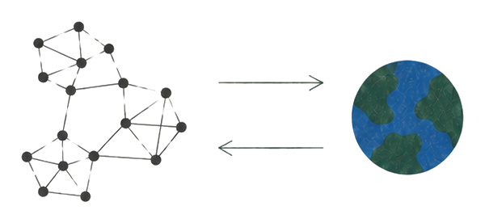
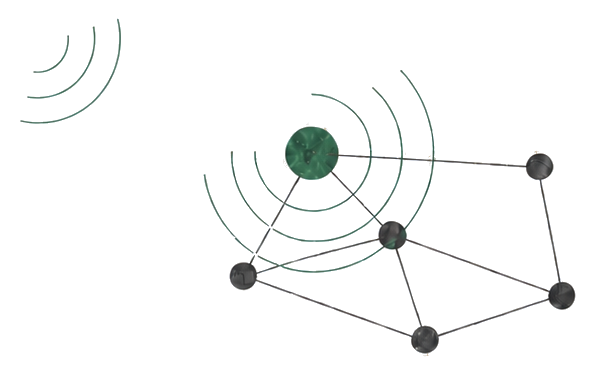
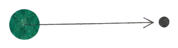

Research & Publications
Physical climate risk arises when a hazard meets exposed and vulnerable people and assets. Nations respond through policy to the risks they face and anticipate. Economic instruments like carbon taxes and subsidies reprice activity. Energy instruments like renewable portfolio standards and coal phase-outs shift the energy mix. People adjust to both, and these adjustments add up to national emissions, which accumulate in the atmosphere, shape future hazards, and close the loop.
I study how a risk signal propagates around this loop. My work examines how scale, network structure, and individual behavior determine whether the signal is dampened or amplified. I use agent-based models for the behavioral layer, integrated assessment models for the macro coupling, and network analysis for the structure of transmission.
Publications
- Jikai Wang, Jiyong Eom. “Wind power forecast uncertainty co-varies across Korean regions through asymmetric heavy-tailed connectedness networks.” Communications Earth & Environment, 2026. [paper]
- Jikai Wang, Gaoxiu Qiao. “Extreme events and quantile time-frequency volatility connectedness across crude oil, green bonds and low-carbon equity markets.” Research in International Business and Finance, 2025. [paper]
- Jikai Wang, Kai Feng, Gaoxiu Qiao. “A hybrid deep learning model for Bitcoin price prediction: data decomposition and feature selection.” Applied Economics, 2024. [paper]
- Yang Hu, Yanran Hong, Kai Feng, Jikai Wang. “Evaluating the importance of monetary policy uncertainty: The long-and short-term effects and responses.” Evaluation Review, 2023. [paper]
Research through-line
Across my work, the unit of analysis has expanded from pairwise relationships, to networks, and ultimately to coupled human–environment systems. Newest first.

Coupled systems · ABM + IAMnow
-
The Timing of Carbon Taxes over the Business Cycle in a Macrofinancial Agent-Based Model
[work in progress]
A two-way coupling of DICE-2023 and the Dystopian Schumpeter meeting Keynes (DSK) macro-financial agent-based model, testing how the timing, size, and point of intervention (production-side vs. investment-side) of climate policy shape the low-carbon transition. -
Fragile Cooperation: Endogenizing Climate Treaty Participation with LLM-Driven Regional Agents
[Proposal submitted to the Tackling Climate Change with Machine Learning workshop at NeurIPS 2026]
Couples DICE-2023 with regional LLM agents that hold memory and political identity to endogenize climate-treaty participation, exploring how withdrawal contagion, erosion cycles, and negotiation effects shape carbon prices and warming.

Networks · network analysis
-
Jikai Wang, Jiyong Eom. “Wind power forecast uncertainty co-varies across Korean regions through asymmetric heavy-tailed connectedness networks.” Communications Earth & Environment, 2026. [paper]
When extreme weather strikes one region, wind-power forecast errors begin to co-vary across regions, propagating through heavy-tailed connectedness networks. -
Jikai Wang, Gaoxiu Qiao. “Extreme events and quantile time-frequency volatility connectedness across crude oil, green bonds and low-carbon equity markets.” Research in International Business and Finance, 2025. [paper]
An exogenous shock like COVID-19 pushes financial markets into homogeneous co-movement. Under repeated shocks this synchronization hardens from short- to long-run, raising systemic risk. -
Topological Formation and Evolution of Higher-Order Interactions in Social Networks [project · Research Assistant · National Taiwan University & Lehigh · 2023–24]
Tracking how three-person group ties form, persist, and dissolve in temporal networks via persistent homology.

Relationships · econometrics · multiscale analysis
-
Jikai Wang, Kai Feng, Gaoxiu Qiao. “A hybrid deep learning model for Bitcoin price prediction: data decomposition and feature selection.” Applied Economics, 2024. [paper]
The strength of indicator-price relationships varies across time scales. Data decomposition and feature selection exploit this to sharpen Bitcoin price forecasts. -
Yang Hu, Yanran Hong, Kai Feng, Jikai Wang. “Evaluating the importance of monetary policy uncertainty: the long- and short-term effects and responses.” Evaluation Review, 2023. [paper]
Separating the long- and short-run effects of monetary-policy uncertainty. -
Mixed-Frequency Extreme and Asymmetric Granger Causality: US GDP and EPU [project · leader · 2022–23]
Extending Granger causality to mixed-frequency, extreme, and asymmetric settings to link US GDP with economic-policy uncertainty. -
Air Quality Index and Stock Price Volatility (GARCH-MIDAS) [project · core member · 2021–22]
Testing asymmetric AQI-to-market effects and building GARCH-MIDAS models with strong out-of-sample performance. -
Physical Health Data with Zero-Inflated GLMs [project · core member · 2021]
Zero-inflated Poisson and negative-binomial GLMs revealing school- and district-level patterns in pull-up scores.